── Attaching core tidyverse packages ──────────────────────── tidyverse 2.0.0 ──
✔ dplyr 1.1.4 ✔ readr 2.1.4
✔ forcats 1.0.0 ✔ stringr 1.5.1
✔ ggplot2 3.4.4 ✔ tibble 3.2.1
✔ lubridate 1.9.3 ✔ tidyr 1.3.0
✔ purrr 1.0.2
── Conflicts ────────────────────────────────────────── tidyverse_conflicts() ──
✖ dplyr::filter() masks stats::filter()
✖ dplyr::lag() masks stats::lag()
ℹ Use the conflicted package (<http://conflicted.r-lib.org/>) to force all conflicts to become errors00. Running all project scripts
Loading all libraries ——————————————————-
99: Loading custom functions ————————————————
Heat map function
Labeller function for facets
Function to find n most/least expressed genes
01: Loading data files ——————————————————
Source of data
The data set used in this project was originally published by Gloub et al. (1999) and was downloaded from https://www.kaggle.com/datasets/crawford/gene-expression/.
Brief data description
There are 3 files of interest in ../data/:
actual.csv,data_set_ALL_AML_independent.csv, anddata_set_ALL_AML_train.csv.
The first one contains (numeric) patient IDs in column ‘patient’ and cancer type (ALL for acute lymphoblastic leukemia, AML for acute myeloid leukemia) in column ‘cancer’. The remaining two contain gene expression data per gene in row, while the columns hold information on each gene’s description, its accession number, patient ID and something denoted gene “call”. The latter refers to whether the authors of the paper deemed the gene present (P), marginal (M), or absent (A) in the sample from each patient.
Loading data
Rows: 72 Columns: 2
── Column specification ────────────────────────────────────────────────────────
Delimiter: ","
chr (1): cancer
dbl (1): patient
ℹ Use `spec()` to retrieve the full column specification for this data.
ℹ Specify the column types or set `show_col_types = FALSE` to quiet this message.
New names:
Rows: 7129 Columns: 70
── Column specification ────────────────────────────────────────────────────────
Delimiter: ","
chr (36): Gene Description, Gene Accession Number, call...4, call...6, call....
dbl (34): 39, 40, 42, 47, 48, 49, 41, 43, 44, 45, 46, 70, 71, 72, 68, 69, 67...
ℹ Use `spec()` to retrieve the full column specification for this data.
ℹ Specify the column types or set `show_col_types = FALSE` to quiet this message.
New names:
Rows: 7129 Columns: 78
── Column specification ────────────────────────────────────────────────────────
Delimiter: ","
chr (40): Gene Description, Gene Accession Number, call...4, call...6, call....
dbl (38): 1, 2, 3, 4, 5, 6, 7, 8, 9, 10, 11, 12, 13, 14, 15, 16, 17, 18, 19,...
ℹ Use `spec()` to retrieve the full column specification for this data.
ℹ Specify the column types or set `show_col_types = FALSE` to quiet this message.Writing combined data
02: Cleaning data ———————————————————–
Loading and cleaning data
New names:
Rows: 7129 Columns: 146
── Column specification
──────────────────────────────────────────────────────── Delimiter: "," chr
(74): Gene Description, Gene Accession Number, call...4.x, call...6.x, c... dbl
(72): 39, 40, 42, 47, 48, 49, 41, 43, 44, 45, 46, 70, 71, 72, 68, 69, 67...
ℹ Use `spec()` to retrieve the full column specification for this data. ℹ
Specify the column types or set `show_col_types = FALSE` to quiet this message.
• `call...72` -> `call...140`
• `call...74` -> `call...142`
• `call...76` -> `call...144`
• `call...78` -> `call...146`Transforming data
Writing clean data
03: Augmenting ————————————————————–
Augmenting expression data
Rows: 72 Columns: 2
── Column specification ────────────────────────────────────────────────────────
Delimiter: ","
chr (1): cancer
dbl (1): patient
ℹ Use `spec()` to retrieve the full column specification for this data.
ℹ Specify the column types or set `show_col_types = FALSE` to quiet this message.
Rows: 72 Columns: 7130
── Column specification ────────────────────────────────────────────────────────
Delimiter: ","
dbl (7130): patient_id, X90857_at, Z84722_at, U16954_at, U19517_at, U14575_a...
ℹ Use `spec()` to retrieve the full column specification for this data.
ℹ Specify the column types or set `show_col_types = FALSE` to quiet this message.Scaling (standardizing) expression data
04: Describing data (exploratory data analysis) —————————–
Loading and cleaning data
New names:
Rows: 7129 Columns: 146
── Column specification
──────────────────────────────────────────────────────── Delimiter: "," chr
(74): Gene Description, Gene Accession Number, call...4.x, call...6.x, c... dbl
(72): 39, 40, 42, 47, 48, 49, 41, 43, 44, 45, 46, 70, 71, 72, 68, 69, 67...
ℹ Use `spec()` to retrieve the full column specification for this data. ℹ
Specify the column types or set `show_col_types = FALSE` to quiet this message.
Rows: 72 Columns: 2
── Column specification
──────────────────────────────────────────────────────── Delimiter: "," chr
(1): cancer dbl (1): patient
ℹ Use `spec()` to retrieve the full column specification for this data. ℹ
Specify the column types or set `show_col_types = FALSE` to quiet this message.
• `call...72` -> `call...140`
• `call...74` -> `call...142`
• `call...76` -> `call...144`
• `call...78` -> `call...146`Basic data set information
[1] 7129 74# A tibble: 5 × 74
gene_accession_number `39` `40` `42` `47` `48` `49` `41` `43` `44`
<chr> <dbl> <dbl> <dbl> <dbl> <dbl> <dbl> <dbl> <dbl> <dbl>
1 X60483_at 115 -150 300 16 123 445 79 55 152
2 D82347_at 82 5 12 -14 54 94 -3 100 42
3 U46499_at 91 70 24 63 70 92 45 165 -87
4 HG3638-HT3993_s_at 275 40 69 144 164 91 -45 -50 56
5 U32986_s_at 748 1184 1312 1071 1526 1779 1255 1081 1151
# ℹ 64 more variables: `45` <dbl>, `46` <dbl>, `70` <dbl>, `71` <dbl>,
# `72` <dbl>, `68` <dbl>, `69` <dbl>, `67` <dbl>, `55` <dbl>, `56` <dbl>,
# `59` <dbl>, `52` <dbl>, `53` <dbl>, `51` <dbl>, `50` <dbl>, `54` <dbl>,
# `57` <dbl>, `58` <dbl>, `60` <dbl>, `61` <dbl>, `65` <dbl>, `66` <dbl>,
# `63` <dbl>, `64` <dbl>, `62` <dbl>, `1` <dbl>, `2` <dbl>, `3` <dbl>,
# `4` <dbl>, `5` <dbl>, `6` <dbl>, `7` <dbl>, `8` <dbl>, `9` <dbl>,
# `10` <dbl>, `11` <dbl>, `12` <dbl>, `13` <dbl>, `14` <dbl>, `15` <dbl>, …Transforming data
Exploratory data analysis
Cancer sample sizes
$x
[1] "Cancer type"
$y
[1] "Count"
$title
[1] "Sample sizes per cancer type"
attr(,"class")
[1] "labels"Saving 7 x 5 in image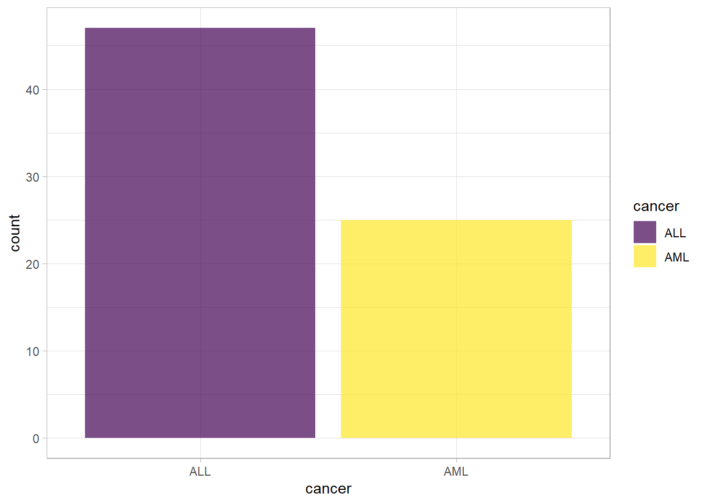
Distributions of mean expressions
`summarise()` has grouped output by 'cancer'. You can override using the
`.groups` argument.Warning: The `labeller` API has been updated. Labellers taking `variable` and `value`
arguments are now deprecated.
ℹ See labellers documentation.Saving 7 x 5 in image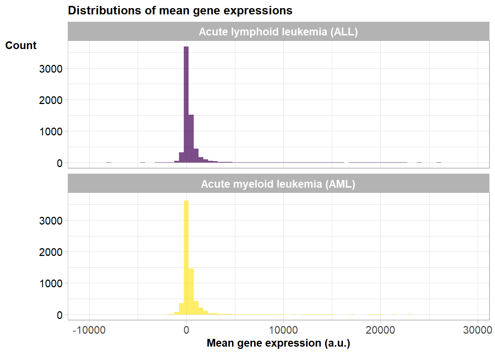
Zooming in on around the MODE
Saving 7 x 5 in image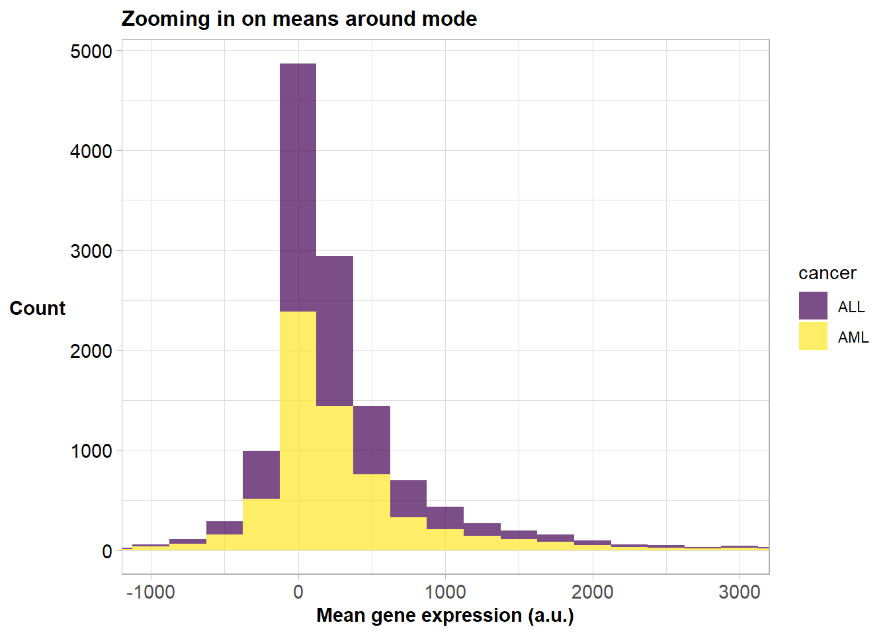
Zooming in on NEGATIVE means
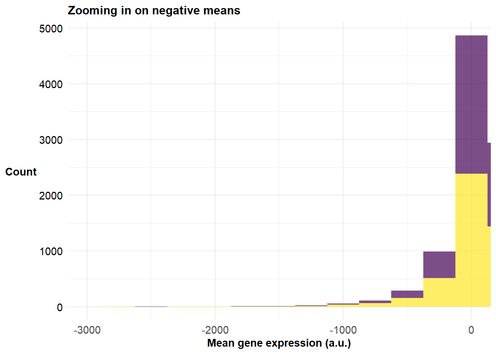
Zooming in on POSITIVE means
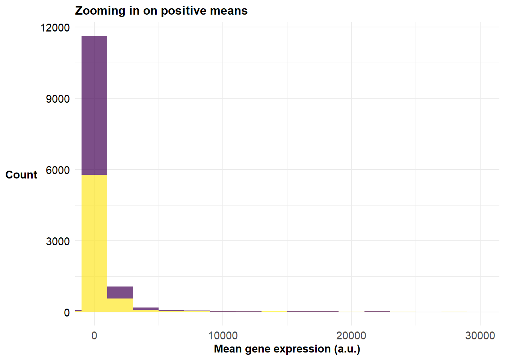
Finding highest and lowest expressed genes
Plotting distributions of 10 highest expressed genes
Picking joint bandwidth of 1960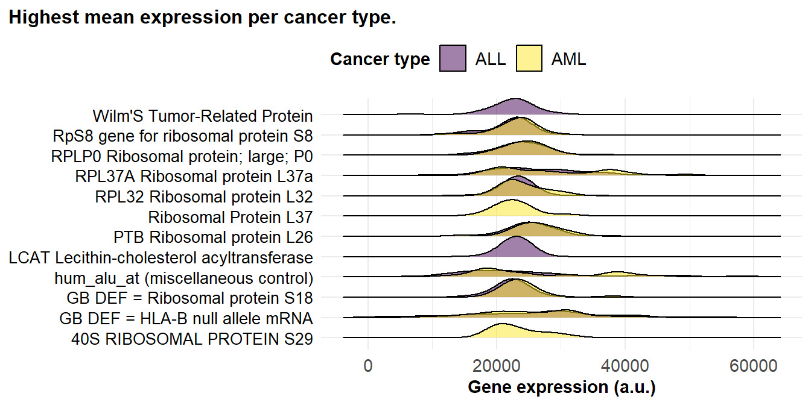
Plotting distribution of 10 lowest expressed genes
Picking joint bandwidth of 592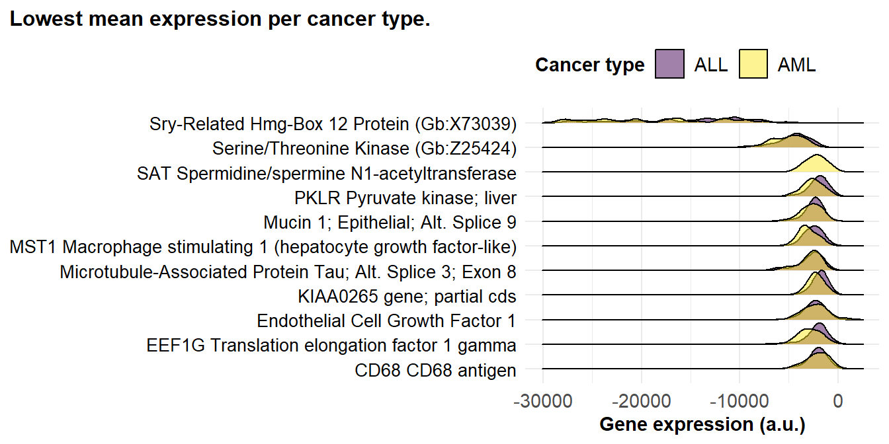
05: Analysis —————————————————————-
Heat maps
Loading unscaled data
Rows: 72 Columns: 7132
── Column specification ────────────────────────────────────────────────────────
Delimiter: ","
chr (1): cancer
dbl (7131): patient_id, cancer_type_number, X90857_at, Z84722_at, U16954_at,...
ℹ Use `spec()` to retrieve the full column specification for this data.
ℹ Specify the column types or set `show_col_types = FALSE` to quiet this message.
Saving 7 x 5 in image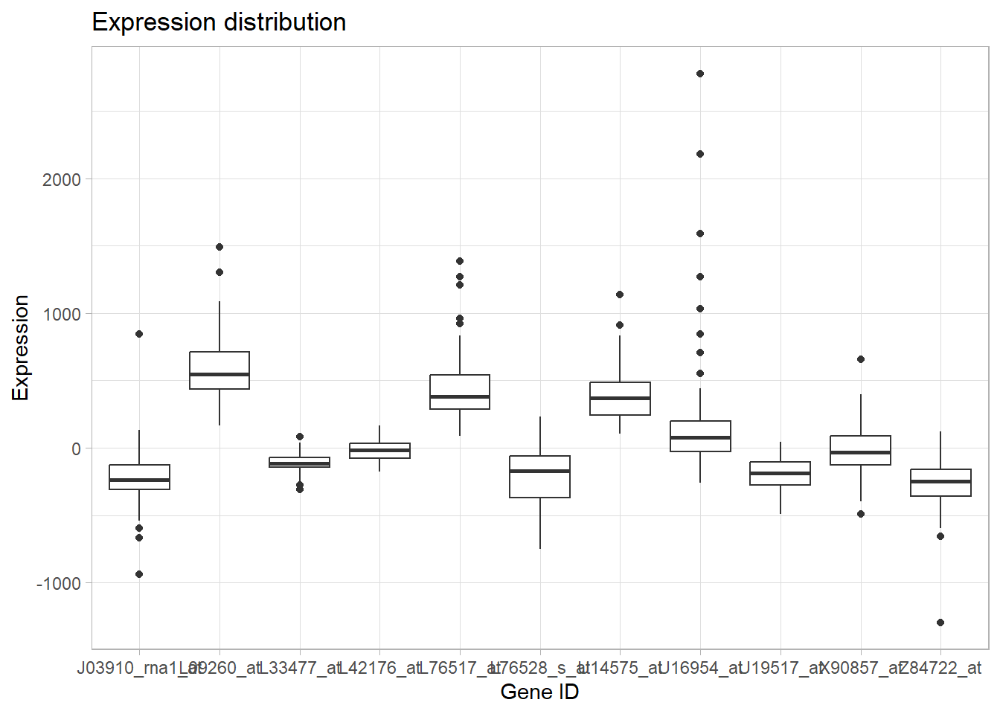
Loading scaled data
Rows: 72 Columns: 7132
── Column specification ────────────────────────────────────────────────────────
Delimiter: ","
chr (1): cancer
dbl (7131): patient_id, cancer_type_number, X90857_at, Z84722_at, U16954_at,...
ℹ Use `spec()` to retrieve the full column specification for this data.
ℹ Specify the column types or set `show_col_types = FALSE` to quiet this message.
Saving 7 x 5 in image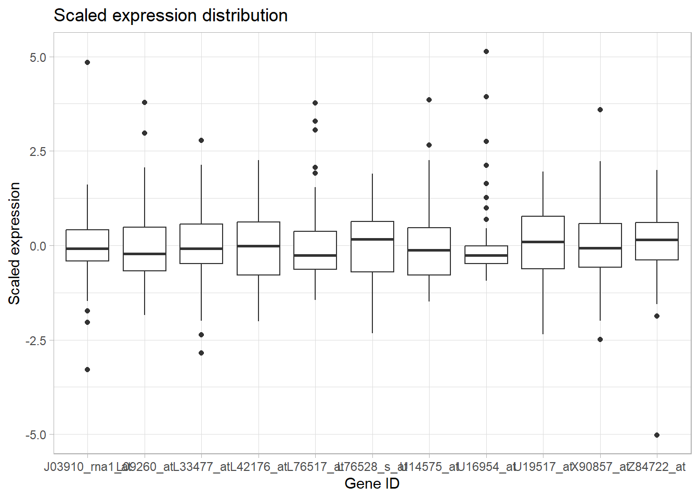
Transforming data
Linear modelling
Processing the results of modelling
Making plots
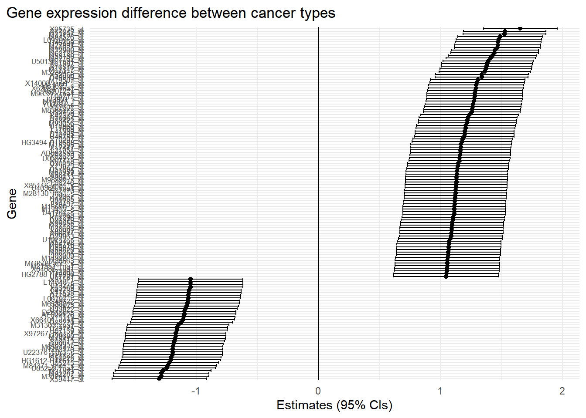
Saving 7 x 5 in image
Saving 7 x 5 in image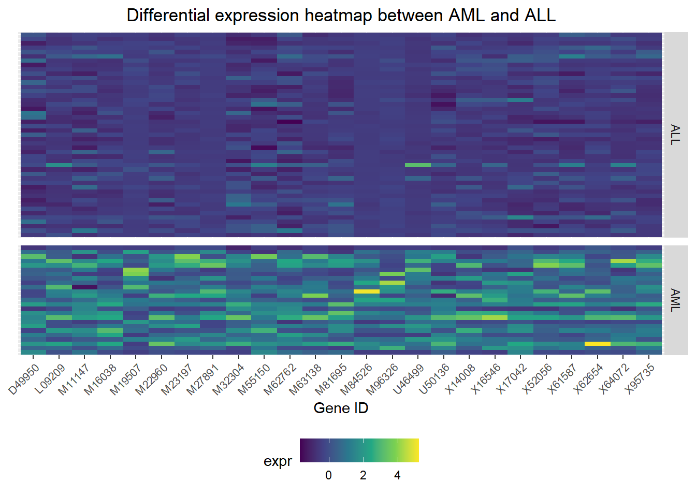
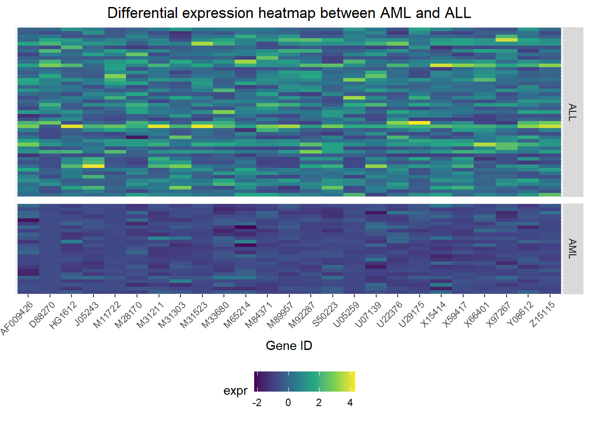
PCA
Loading the data
Rows: 72 Columns: 7132
── Column specification ────────────────────────────────────────────────────────
Delimiter: ","
chr (1): cancer
dbl (7131): patient_id, cancer_type_number, X90857_at, Z84722_at, U16954_at,...
ℹ Use `spec()` to retrieve the full column specification for this data.
ℹ Specify the column types or set `show_col_types = FALSE` to quiet this message.Performing a PCA analysis
Saving 7 x 5 in image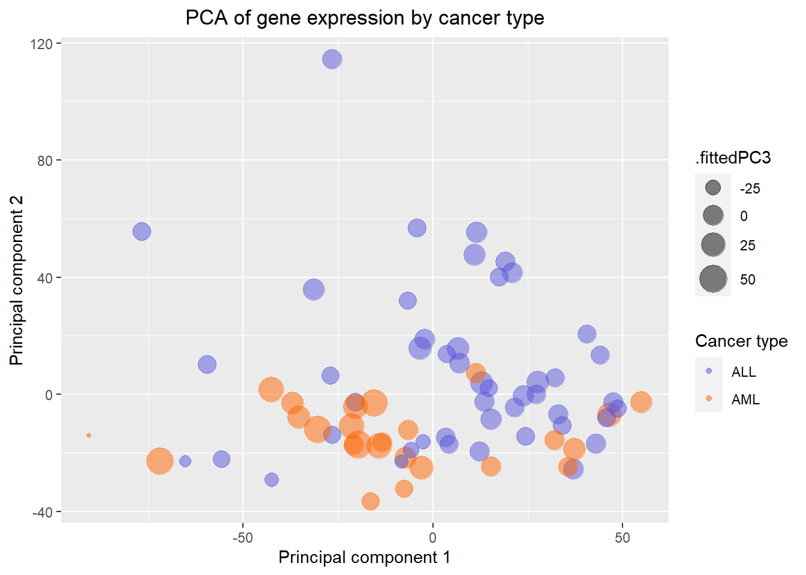
Exploring variance explained by PCs and eigenvalues
Saving 7 x 5 in image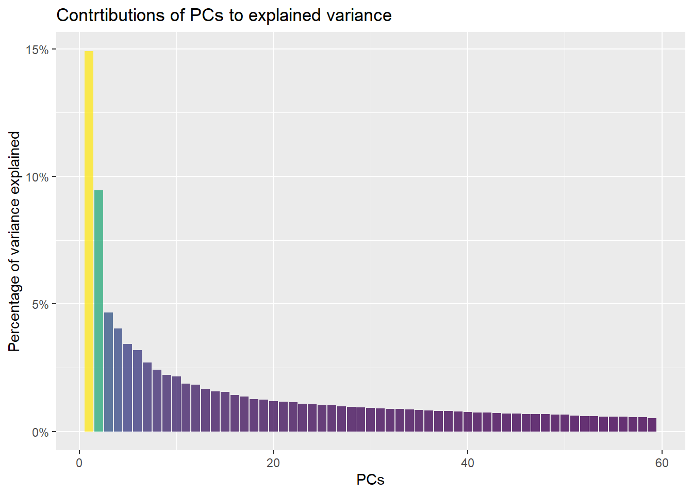
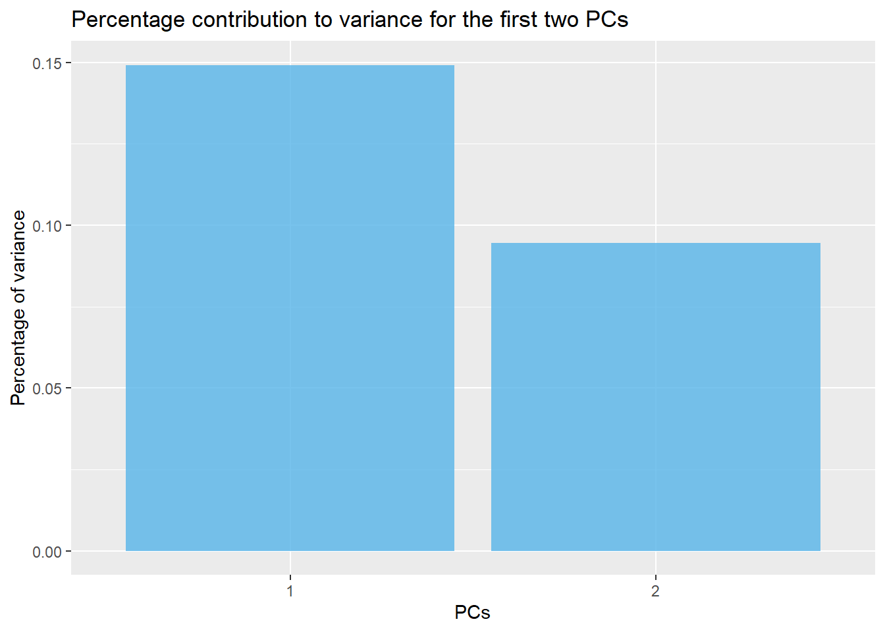